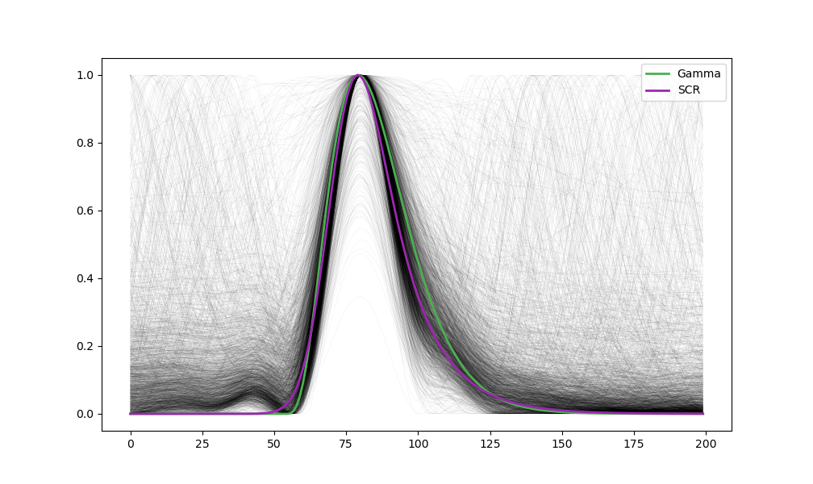

Blink Template Estimation for Electrooculography (EOG)
Contents
Blink Template Estimation for Electrooculography (EOG)#
This study can be referenced by citing the package.
We’d like to publish this study, but unfortunately we currently don’t have the time. If you want to help to make it happen, please contact us!
Introduction#
The goal of this study is to identify a template for blinks in vertical EOG recordings. For this, we will optimize to candidate functions, a Gamma distribution and the SCR function proposed by Bach, Flandin, Friston, & Dolan (2010) to model skin conductance responses.
In the first study, we will obtain the optimized parameters for a large numbers of “events” detected in the vEOG signal (for different subjects under different tasks), assuming that blinks are the prevalent type of detected events.
In the second study, we will see how these two blink templates (obtained from the optimized parameters of study 1 for the two functions) perform by computing their difference (RMSE) with each EOG event. The assumption is that not all of the detected events are blinks, and so we will observe a bi-modal distribution, with events closely matching the template and other events differing from them.
In the third study, after identifying a reasonable RMSE threshold to identify and keep only the “blink”-like events, we will then re-optimize the functions parameters on this cleaner subset of events.
Study 1: Initial Estimation#
Methods#
Define Functions#
# import neurokit2 as nk
import numpy as np
import pandas as pd
import matplotlib.pyplot as plt
import scipy.signal
def fit_gamma(x, loc, a, scale):
x = nk.rescale(x, to=[0, 10])
gamma = scipy.stats.gamma.pdf(x, a=a, loc=loc, scale=scale)
y = gamma / np.max(gamma)
return y
def fit_scr(x, time_peak, rise, decay1, decay2):
x = nk.rescale(x, to=[0, 10])
gt = np.exp(-((x - time_peak) ** 2) / (2 * rise ** 2))
ht = np.exp(-x / decay1) + np.exp(-x / decay2)
ft = np.convolve(gt, ht)
ft = ft[0 : len(x)]
y = ft / np.max(ft)
return y
# Starting parameters
plt.plot(fit_gamma(np.arange(100), 3, 3, 0.5), linewidth=2, linestyle='-', color="#4CAF50", label='Gamma')
plt.plot(fit_scr(np.arange(100), 3.5, 0.5, 1, 1), linewidth=2, linestyle='-', color="#9C27B0", label='SCR')
plt.savefig("figures/fig1.png")
plt.clf()
 ####
Optimize Parameters
####
Optimize Parameters
The eogdb dataset is placed in the NeuroKit/data/eogdb/ folder.
params_gamma = pd.DataFrame(columns=["loc", "a", "scale", "Participant", "Task"])
params_scr = pd.DataFrame(columns=["time_peak", "rise", "decay1", "decay2", "Participant", "Task"])
for i in range(4):
print("Task: " + str(i))
data = pd.read_csv("../../data/eogdb/eogdb_task" + str(i + 1) + ".csv")
for j, participant in enumerate(np.unique(data["Participant"])):
print(" - " + str(j + 1))
segment = data[data["Participant"] == participant]
signal = segment["vEOG"]
cleaned = nk.eog_clean(signal, sampling_rate=200, method='neurokit')
blinks = nk.signal_findpeaks(cleaned, relative_height_min=1.5)["Peaks"]
events = nk.epochs_create(cleaned, blinks, sampling_rate=200, epochs_start=-0.4, epochs_end=0.6)
events = nk.epochs_to_array(events) # Convert to 2D array
x = np.linspace(0, 100, num=len(events))
p_gamma = np.full((events.shape[1], 3), np.nan)
p_bateman = np.full((events.shape[1], 3), np.nan)
p_scr = np.full((events.shape[1], 4), np.nan)
for i in range(events.shape[1]):
if np.isnan(events[:, i]).any():
break
events[:, i] = nk.rescale(events[:, i], to=[0, 1]) # Reshape to 0-1 scale
try:
p_gamma[i, :], _ = scipy.optimize.curve_fit(fit_gamma, x, events[:, i], p0=[3, 3, 0.5])
p_scr[i, :], _ = scipy.optimize.curve_fit(fit_scr, x, events[:, i], p0=[3.5, 0.5, 1, 1])
except RuntimeError:
pass
p_gamma = pd.DataFrame(p_gamma[~np.isnan(p_gamma).any(axis=1)], columns=["loc", "a", "scale"])
p_gamma["Participant"] = participant
p_gamma["Task"] = data["Task"][0]
params_gamma = pd.concat([params_gamma, p_gamma], axis=0)
p_scr = pd.DataFrame(p_scr[~np.isnan(p_scr).any(axis=1)], columns=["time_peak", "rise", "decay1", "decay2"])
p_scr["Participant"] = participant
p_scr["Task"] = data["Task"][0]
params_scr = pd.concat([params_scr, p_scr], axis=0)
Results#
Visualize the optimal templates for one task.
data = pd.read_csv("../../data/eogdb/eogdb_task3.csv")
cleaned = nk.eog_clean(data["vEOG"], sampling_rate=200, method='neurokit')
blinks = nk.signal_findpeaks(cleaned, relative_height_min=1.5)["Peaks"][:-1]
events = nk.epochs_create(cleaned, blinks, sampling_rate=200, epochs_start=-0.4, epochs_end=0.6)
events = nk.epochs_to_array(events)
for i in range(events.shape[1]):
events[:, i] = nk.rescale(events[:, i], to=[0, 1]) # Reshape to 0-1 scale
x = np.linspace(0, 100, num=len(events))
template_gamma = fit_gamma(x, *np.nanmedian(params_gamma.iloc[:, [0, 1, 2]], axis=0))
template_scr = fit_scr(x, *np.nanmedian(params_scr.iloc[:, [0, 1, 2, 3]], axis=0))
plt.plot(events, linewidth=0.02, color="black")
plt.plot(template_gamma, linewidth=2, linestyle='-', color="#4CAF50", label='Gamma')
plt.plot(template_scr, linewidth=2, linestyle='-', color="#9C27B0", label='SCR')
plt.legend(loc="upper right")
plt.savefig("figures/fig2.png")
plt.clf()

Study 2: Difference between Template and EOG Events#
Methods#
data_rmse = pd.DataFrame(columns=["RMSE", "Index", "Participant", "Task", "Function"])
for i in range(4):
data = pd.read_csv("../../data/eogdb/eogdb_task" + str(i + 1) + ".csv")
for j, participant in enumerate(np.unique(data["Participant"])):
segment = data[data["Participant"] == participant]
signal = segment["vEOG"]
cleaned = nk.eog_clean(signal, sampling_rate=200, method='neurokit')
blinks = nk.signal_findpeaks(cleaned, relative_height_min=1.5)["Peaks"]
events = nk.epochs_create(cleaned, blinks, sampling_rate=200, epochs_start=-0.4, epochs_end=0.6)
events = nk.epochs_to_array(events) # Convert to 2D array
# Rescale
for i in range(events.shape[1]):
events[:, i] = nk.rescale(events[:, i], to=[0, 1]) # Reshape to 0-1 scale
# RMSE - Gamma
rmse = pd.DataFrame({"RMSE": [nk.fit_rmse(events[:, i], template_gamma) for i in range(events.shape[1])],
"Index": range(events.shape[1]),
"Participant": [participant]*events.shape[1],
"Task": [data["Task"][0]]*events.shape[1],
"Function": ["Gamma"] * events.shape[1]})
rmse["Index"] = rmse["Participant"] + "_" + rmse["Task"] + "_" + rmse["Index"].astype(str)
data_rmse = pd.concat([data_rmse, rmse], axis=0)
# RMSE - SCR
rmse = pd.DataFrame({"RMSE": [nk.fit_rmse(events[:, i], template_scr) for i in range(events.shape[1])],
"Index": range(events.shape[1]),
"Participant": [participant]*events.shape[1],
"Task": [data["Task"][0]]*events.shape[1],
"Function": ["SCR"] * events.shape[1]})
rmse["Index"] = rmse["Participant"] + "_" + rmse["Task"] + "_" + rmse["Index"].astype(str)
data_rmse = pd.concat([data_rmse, rmse], axis=0)
Results#
p = data_rmse.pivot(index='Index', columns='Function', values='RMSE').plot.kde()
p.set_xlim(0, 1)
p.axvline(x=0.25, color="red")
plt.savefig("figures/fig3.png")
plt.clf()

Study 3: Optimize the Parameters#
Methods#
optimal_gamma = np.nanmedian(params_gamma.iloc[:, [0, 1, 2]], axis=0)
optimal_scr = np.nanmedian(params_scr.iloc[:, [0, 1, 2, 3]], axis=0)
params_gamma = pd.DataFrame(columns=["loc", "a", "scale", "Participant", "Task"])
params_scr = pd.DataFrame(columns=["time_peak", "rise", "decay1", "decay2", "Participant", "Task"])
for i in range(4):
print("Task: " + str(i))
data = pd.read_csv("../../data/eogdb/eogdb_task" + str(i + 1) + ".csv")
for j, participant in enumerate(np.unique(data["Participant"])):
print(" - " + str(j + 1))
segment = data[data["Participant"] == participant]
signal = segment["vEOG"]
cleaned = nk.eog_clean(signal, sampling_rate=200, method='neurokit')
blinks = nk.signal_findpeaks(cleaned, relative_height_min=1.5)["Peaks"]
events = nk.epochs_create(cleaned, blinks, sampling_rate=200, epochs_start=-0.4, epochs_end=0.6)
events = nk.epochs_to_array(events) # Convert to 2D array
x = np.linspace(0, 100, num=len(events))
p_gamma = np.full((events.shape[1], 3), np.nan)
p_scr = np.full((events.shape[1], 4), np.nan)
for i in range(events.shape[1]):
if np.isnan(events[:, i]).any():
break
events[:, i] = nk.rescale(events[:, i], to=[0, 1]) # Reshape to 0-1 scale
if nk.fit_rmse(events[:, i], template_gamma) < 0.25:
try:
p_gamma[i, :], _ = scipy.optimize.curve_fit(fit_gamma, x, events[:, i], p0=optimal_gamma)
except RuntimeError:
pass
if nk.fit_rmse(events[:, i], template_scr) < 0.25:
try:
p_scr[i, :], _ = scipy.optimize.curve_fit(fit_scr, x, events[:, i], p0=optimal_scr)
except RuntimeError:
pass
p_gamma = pd.DataFrame(p_gamma[~np.isnan(p_gamma).any(axis=1)], columns=["loc", "a", "scale"])
p_gamma["Participant"] = participant
p_gamma["Task"] = data["Task"][0]
params_gamma = pd.concat([params_gamma, p_gamma], axis=0)
p_scr = pd.DataFrame(p_scr[~np.isnan(p_scr).any(axis=1)], columns=["time_peak", "rise", "decay1", "decay2"])
p_scr["Participant"] = participant
p_scr["Task"] = data["Task"][0]
params_scr = pd.concat([params_scr, p_scr], axis=0)
data_rmse = pd.DataFrame(columns=["RMSE", "Index", "Participant", "Task", "Function"])
for i in range(4):
data = pd.read_csv("../../data/eogdb/eogdb_task" + str(i + 1) + ".csv")
for j, participant in enumerate(np.unique(data["Participant"])):
segment = data[data["Participant"] == participant]
signal = segment["vEOG"]
cleaned = nk.eog_clean(signal, sampling_rate=200, method='neurokit')
blinks = nk.signal_findpeaks(cleaned, relative_height_min=1.5)["Peaks"]
events = nk.epochs_create(cleaned, blinks, sampling_rate=200, epochs_start=-0.4, epochs_end=0.6)
events = nk.epochs_to_array(events) # Convert to 2D array
# Rescale
for i in range(events.shape[1]):
events[:, i] = nk.rescale(events[:, i], to=[0, 1]) # Reshape to 0-1 scale
# RMSE - Gamma
rmse = pd.DataFrame({"RMSE": [nk.fit_rmse(events[:, i], template_gamma) for i in range(events.shape[1])],
"Index": range(events.shape[1]),
"Participant": [participant]*events.shape[1],
"Task": [data["Task"][0]]*events.shape[1],
"Function": ["Gamma"] * events.shape[1]})
rmse["Index"] = rmse["Participant"] + "_" + rmse["Task"] + "_" + rmse["Index"].astype(str)
data_rmse = pd.concat([data_rmse, rmse], axis=0)
# RMSE - SCR
rmse = pd.DataFrame({"RMSE": [nk.fit_rmse(events[:, i], template_scr) for i in range(events.shape[1])],
"Index": range(events.shape[1]),
"Participant": [participant]*events.shape[1],
"Task": [data["Task"][0]]*events.shape[1],
"Function": ["SCR"] * events.shape[1]})
rmse["Index"] = rmse["Participant"] + "_" + rmse["Task"] + "_" + rmse["Index"].astype(str)
data_rmse = pd.concat([data_rmse, rmse], axis=0)
df = data_rmse.pivot(index='Index', columns='Function', values='RMSE')
print(df.median(axis=0))
## Function
## Gamma 0.112794
## SCR 0.114369
## dtype: float64
Results#
data = pd.read_csv("../../data/eogdb/eogdb_task3.csv")
cleaned = nk.eog_clean(data["vEOG"], sampling_rate=200, method='neurokit')
blinks = nk.signal_findpeaks(cleaned, relative_height_min=1.5)["Peaks"]
events = nk.epochs_create(cleaned, blinks, sampling_rate=200, epochs_start=-0.4, epochs_end=0.6)
events = nk.epochs_to_array(events)
for i in range(events.shape[1]):
events[:, i] = nk.rescale(events[:, i], to=[0, 1]) # Reshape to 0-1 scale
x = np.linspace(0, 100, num=len(events))
template_gamma2 = fit_gamma(x, *np.nanmedian(params_gamma.iloc[:, [0, 1, 2]], axis=0))
template_scr2 = fit_scr(x, *np.nanmedian(params_scr.iloc[:, [0, 1, 2, 3]], axis=0))
plt.plot(events, linewidth=0.02, color="black")
plt.plot(template_gamma, linewidth=2, linestyle='-', color="#4CAF50", label='Gamma')
plt.plot(template_gamma2, linewidth=2, linestyle='-', color="#2196F3", label='Gamma (optimized)')
plt.plot(template_scr, linewidth=2, linestyle='-', color="#9C27B0", label='SCR')
plt.plot(template_scr2, linewidth=2, linestyle='-', color="#E91E63", label='SCR (optimized)')
plt.legend(loc="upper right")
plt.savefig("figures/fig4.png")
plt.clf()

data = pd.read_csv("../../data/eogdb/eogdb_task3.csv")
cleaned = nk.eog_clean(data[(data["Participant"] == "S1") | (data["Participant"] == "S2")]["vEOG"], sampling_rate=200, method='neurokit')
blinks = nk.signal_findpeaks(cleaned, relative_height_min=1.5)["Peaks"]
events = nk.epochs_create(cleaned, blinks, sampling_rate=200, epochs_start=-0.4, epochs_end=0.6)
events = nk.epochs_to_array(events)
for i in range(events.shape[1]):
events[:, i] = nk.rescale(events[:, i], to=[0, 1]) # Reshape to 0-1 scale
rmse = np.array([nk.fit_rmse(events[:, i], template_gamma2) for i in range(events.shape[1])])
plt.plot(events[:, rmse < 0.25], linewidth=0.2, color="black")
plt.plot(events[:, rmse >= 0.25], linewidth=0.2, color="red")
plt.plot(template_gamma2, linewidth=2, linestyle='-', color="#2196F3", label='Gamma (optimized)')
plt.plot(template_scr2, linewidth=2, linestyle='-', color="#E91E63", label='SCR (optimized)')
plt.legend(loc="upper right")
plt.savefig("figures/fig5.png")
plt.clf()

The optimal blink template using a gamma distribution has the following parameters:
gamma = np.nanmedian(params_gamma.iloc[:, [0, 1, 2]], axis=0)
print(
"- location: " + str(np.round(gamma[0], 3)) +
"\n- alpha: " + str(np.round(gamma[1], 3)) +
"\n- scale: " + str(np.round(gamma[2], 3)))
## - location: 2.659
## - alpha: 5.172
## - scale: 0.317
The optimal blink template using the SCR function by Bach et al. (2010) has the following parameters:
scr = np.nanmedian(params_scr.iloc[:, [0, 1, 2, 3]], axis=0)
print(
"- time_peak: " + str(np.round(scr[0], 3)) +
"\n- rise: " + str(np.round(scr[1], 3)) +
"\n- decay1: " + str(np.round(scr[2], 3)) +
"\n- decay2: " + str(np.round(scr[3], 3)))
## - time_peak: 3.644
## - rise: 0.422
## - decay1: 0.356
## - decay2: 0.943
References#
Bach, D. R., Flandin, G., Friston, K. J., & Dolan, R. J. (2010). Modelling event-related skin conductance responses. International Journal of Psychophysiology, 75(3), 349–356.